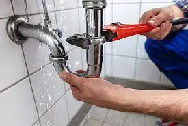
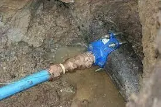

Leak Repair Services in San Diego
Leaks are one of the most prevalent plumbing issues homeowners encounter. Whether originating from faucets, toilets, or hidden pipes within walls, leaks can lead to significant damage and increased utility bills. If you're in need of prompt and reliable leak repair services in San Diego, Orange County and Riverside turn to the professionals at EZ Heat and Air.
We Handle Various Types of Leaks: It's crucial to address leaks as soon as they are detected, regardless of their size. At EZ Heat and Air, we specialize in repairing a wide range of leaks throughout your home.
Common areas where leaks typically occur include:
- Faucets: Dripping faucets can waste water and increase your bills.
- Toilets: Leaks from toilets can lead to significant water loss and potential damage.
- Showerheads and Bathtubs: These fixtures can develop leaks that may go unnoticed but cause damage over time.
- Sinks: Sink leaks can affect cabinetry and flooring if not addressed quickly.
- Water Heaters: Leaks from water heaters can indicate serious issues requiring immediate attention.
- Interior Pipes: Hidden leaks in walls or ceilings can lead to mold and structural damage.
- Slab Leaks: These can be particularly damaging as they occur beneath your home's foundation.
Leak Detection Services Offered in San Diego
Acoustic Leak Detection
This method utilizes specialized microphones to listen for the sounds of leaks in pipes. By analyzing the acoustic signatures produced when water or gas escapes, our technicians can accurately pinpoint the location of leaks without invasive measures.
Thermal Imaging
Using infrared cameras, we can detect temperature variations caused by water leaks behind walls or under floors. This non-invasive method allows us to identify hidden leaks without causing damage to your property.
Moisture Mapping
Moisture meters are employed to assess the humidity levels in various areas of your home. By identifying areas with elevated moisture, we can determine potential leak sources.
Pressure Testing
We conduct pressure tests on your plumbing system to identify leaks that may not be audible or visible. By monitoring pressure changes within the system, our technicians can pinpoint weaknesses or breaches in pipes.
Get Immediate Assistance for Plumbing Emergencies with EZ Heat and Air

Leaks can lead to serious problems if not addressed promptly. A sudden increase in pressure can cause pipes to burst, resulting in costly repairs and water loss. If you notice a significant leak, don’t hesitate to call us for emergency leak repair services in San Diego.
We understand that plumbing leaks can often be overlooked or ignored, but addressing them early is crucial to prevent more extensive damage. Our expert plumbers are trained to handle all types of leaks efficiently and effectively. Whether it’s a minor drip or a major burst, we are here to help.

FREE
Estimate
Request a quote and get a free estimate for installation, repair, and replacement services from professionals

FREE
Service Call
From plumbing repairs to full replacements, connect with our experts to inquire about services at zero charges

15%
Discount Available
15% Off to the Police, Military, Fire Seniors and Teachers for Services up to $1000.

FINANCING
Available
Overcome financial barriers and keep your plumbing system up to date with our alternative financing options.

24/7
Service
Same-day Plumbing Service For Any Issue Or Concern Related To Leakage, Clogging, Or Malfunctioning Of Appliances.
Don't Let Plumbing Issues Interrupt Your Comfort & Budget
CALL EXPERTS NOW
 (760) 392 7616
(760) 392 7616
What Our Clients Say About Us

"I’ve been using their air conditioner maintenance service for years, and it’s always top-notch. Their team is quick, professional, and thorough. They ensure my AC is running smoothly and efficiently, saving me money on energy bills..."
Sarah M. - San Diego
"Excellent service! I called for air conditioner maintenance before summer, and their technician arrived right on time... It’s running great, and I haven’t had any issues since!"
John L. - Riverside
"We needed emergency HVAC services, and they were there in no time. Their services are exceptional, and the team is always friendly and professional..."
Amanda R. - Orange County
Why Choose Our 24-Hour Emergency Leak Detection Services?
Immediate Response
Plumbing emergencies can happen at any time, and a quick response is crucial. Our team is available 24/7 to address leaks, preventing minor issues from escalating into major disasters. Whether it’s a burst pipe or a significant leak, we’re just a phone call away.
No Mess Left Behind
We understand that plumbing problems can create messes. Our trained professionals prioritize cleanliness, ensuring that they leave your home spotless after completing the job. You can trust us to handle your leak detection and repair while keeping your space tidy.
Transparent Pricing
At EZ Heat and Air, we pride ourselves on fair and honest pricing. We provide clear estimates with no hidden fees, so you know exactly what to expect. Contact us for a free, no-obligation quote for our leak detection services.
Advanced Training and Equipment
Our technicians undergo extensive training and utilize state-of-the-art equipment to accurately detect leaks. This expertise allows us to resolve your plumbing issues efficiently, exceeding your expectations every time.

FAQs
Common signs of a leak include unexplained increases in your water bill, damp spots on walls or ceilings, mold growth, and water pooling on floors. If you notice any of these issues, it’s essential to contact a professional for leak detection and repair services.
It’s crucial to address leaks as soon as they are detected. Even minor leaks can lead to significant damage over time, including structural issues and mold growth. Prompt action can save you money on repairs and prevent further complications in your plumbing system.
We can repair various types of leaks, including those from faucets, toilets, showerheads, sinks, water heaters, and interior pipes. Our experienced technicians are equipped to handle both visible and hidden leaks efficiently, ensuring your plumbing system is restored to optimal condition.
Yes! We provide 24/7 emergency leak repair services in San Diego. If you experience a major leak or plumbing emergency, our team is ready to respond quickly to minimize damage and restore your water supply as soon as possible.
At EZ Heat and Air, we offer transparent pricing with no hidden fees. After assessing the situation, we provide a detailed estimate before starting any work. Contact us for a free, no-obligation quote tailored to your specific leak repair needs.